Atributos de marca
Identidad editorial cover-first: claridad, velocidad, confianza y lectura inmediata.
- Editorial
- Preciso
- Actual
- Sobrio
- Confiable
- Ágil
Paleta
Eje bitono de la portada: carbón verdoso + blanco. Elevaciones y bordes derivados del primary. Sin rojo ni azul SaaS.
Azules del blazer y la camisa son color de fotografía, no tokens de UI. No elevarlos a CTAs ni acentos de sistema.
Tipografía
Montserrat para wordmark y titulares. Source Sans 3 para cuerpo. Marca productora: SVG Brieffy (`public/brieffy-logo.svg`).
El Bri eff

México y el mundo, en quince minutos.
Los temas que marcan la conversación del día.
El Brieff es el podcast diario conducido por Arturo Salazar y producido por Brieffy. Informa con precisión sobre los temas de conversación más importantes, de lunes a viernes.
Episodio · Lunes a viernes · 15 min
Portada canónica
Asset 1:1 para plataformas y share cards. Wordmark apilado, firma Brieffy y retrato del conductor.

Composición
- Fondo carbón verdoso (#121C16), no negro puro.
- Wordmark EL / BRI / EFF en sans extrabold blanca a la izquierda.
- Firma Brieffy (SVG) arriba a la derecha.
- Retrato de Arturo Salazar a la derecha, solapando el wordmark.
Uso
- Preferir el asset completo en OG, share cards y hero de marca.
- No recortar el wordmark ni el rostro de forma que rompa la lectura.
- Colores de UI derivados del fondo y el blanco; no de la vestimenta.
Sistema visual
Editorial digital cover-first: alto contraste tipográfico sobre fondo oscuro. Mood inteligente, directo y contemporáneo.
Priorizar
- Portada canónica como asset de marca
- Contraste blanco sobre primary
- Titulares cortos; stacking EL/BRI/EFF cuando se cite el wordmark
Evitar
- Fondos claros como default de marca
- Acentos rojo/azul genéricos ajenos a la portada
- Elevar colores de vestuario a tokens de UI
Radios, espaciado e interacción
Escala corta. CTAs en ink sobre primary: el mismo golpe bitono de la portada.